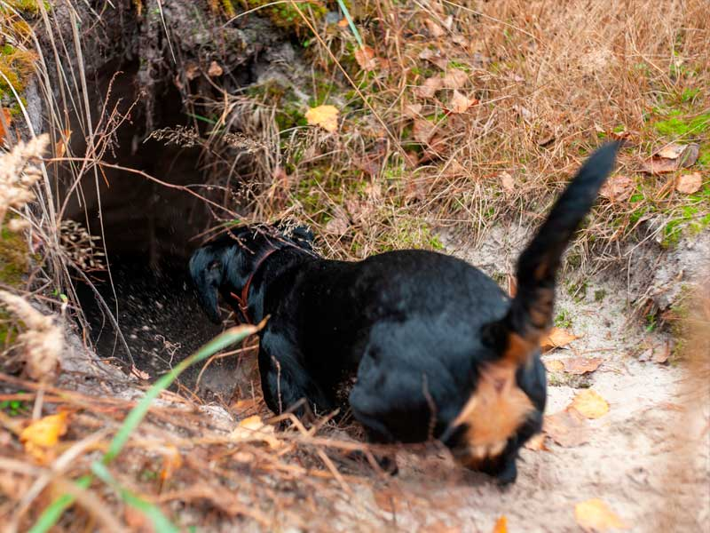

¿Qué es la Caza de Madriguera?
La caza de madriguera es una modalidad que se centra en capturar o cazar animales que viven bajo tierra en madrigueras o agujeros. Estos animales suelen ser difíciles de cazar debido a su vida subterránea y la habilidad que tienen para esconderse, lo que hace que esta técnica sea una de las más complejas en la caza.
Tipos de Animales en la Caza de Madriguera
- Conejos: Son el objetivo más común en la caza de madriguera. Tienen madrigueras profundas y son animales rápidos, lo que hace que sean un desafío para los cazadores.
- Zorros: Los zorros, aunque menos comunes, también son cazados a través de sus madrigueras. La caza de zorros requiere un enfoque más meticuloso debido a su astucia.
- Tejones: Estos animales también son conocidos por su vida subterránea. Su caza es más desafiante debido a su tamaño y fuerza.
- Hurones: En algunos casos, los hurones se utilizan para entrar en las madrigueras de animales como conejos o zorros, ayudando a localizarlos y sacarlos a la superficie.
Equipos y Técnicas de Caza de Madriguera
La caza de madriguera requiere equipos especializados y una gran paciencia. Las técnicas varían dependiendo del tipo de animal que se está cazando y el tipo de madriguera que se busca:
- Hurones: Los hurones son usados por muchos cazadores para entrar en las madrigueras y obligar a los animales a salir. El hurón es un excelente rastreador subterráneo.
- Perros de madriguera: Algunos cazadores utilizan perros especialmente entrenados para excavar y localizar a los animales en sus madrigueras. Estos perros a menudo trabajan en conjunto con los cazadores humanos.
- Herramientas de excavación: En algunos casos, se utilizan palas y otras herramientas de excavación para acceder a las madrigueras y capturar o eliminar al animal.
- Redes y trampas: Se colocan redes o trampas en las entradas de las madrigueras para capturar al animal al intentar salir. Esta técnica se utiliza sobre todo para conejos y zorros.
Normativas y Regulación de la Caza de Madriguera
La caza de madriguera está sujeta a regulaciones específicas en muchos países para proteger tanto a los animales como el ecosistema. Las leyes de caza varían según la región, pero generalmente incluyen:
- Licencias y permisos: Se requieren permisos específicos para cazar en madrigueras, especialmente si se utilizan animales como hurones o perros de madriguera.
- Temporadas de caza: La caza de ciertos animales está restringida a temporadas específicas para evitar la sobreexplotación de las especies.
- Protección de especies en peligro: Algunos animales, como el zorro y el tejón, están protegidos por leyes de conservación, y su caza puede estar limitada o prohibida en ciertas áreas.